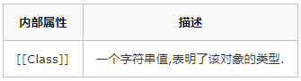
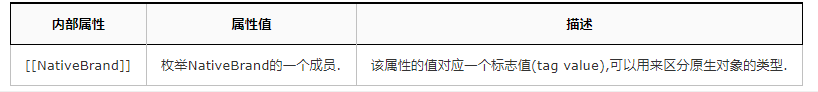
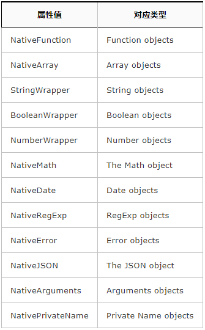

typeof
typeof:返回基本类型，即 “number”，”string”，”undefined”，”boolean”，”object” 五种，对于数组和对象来说，typeof统统返回”object”
1 | typeof(undefind)//undefind |
js 在底层存储变量的时候，会在变量的机器码的低位1-3位存储其类型信息:
- 000：对象
- 010：浮点数
- 100：字符串
- 110：布尔
- 1：整数
但是，对于 undefined 和 null 来说，这两个值的信息存储是有点特殊的。
- null：所有机器码均为0
- undefined：用 −2^30 整数来表示
所以，typeof 在判断 null 的时候就出现问题了，由于 null 的所有机器码均为0，因此直接被当做了对象来看待。
instanceof
instanceof:判断复合类型和正则表达式，返回true和false，但是不能判断基本数据类型
1 | var a = {}; |
可以凑合着用来准确地判断对象的复合类型：
1 | //对象 |
具体实现过程就是向上遍历原型链，实现代码：1
2
3
4
5
6
7
8
9
10
11
12function _instanceof(A, B) {
var O = B.prototype;// 取B的显示原型
A = A.__proto__;// 取A的隐式原型
while (true) {
//Object.prototype.__proto__ === null
if (A === null)
return false;
if (O === A)// 这里重点：当 O 严格等于 A 时，返回 true
return true;
A = A.__proto__;
}
}
Object.prototype.toString.call()
最好用的判断复合类型方法还是使用Object.prototype.toString.call()这个函数：
1 | console.log(Object.prototype.toString.call(123)) //[object Number] |
可以看到，它能够区分所有的数据类型。（ES6 还能区分map和set）
原理：Object.prototype.toString()在toString方法被调用时,会执行下面的操作步骤:
- 如果this的值为undefined,则返回”[object Undefined]”.
- 如果this的值为null,则返回”[object Null]”.
- 让O成为调用ToObject(this)的结果.
- 让class成为O的内部属性[[Class]]的值.
- 返回三个字符串”[object “, class, 以及 “]”连接后的新字符串.
[[Class]]是一个内部属性,所有的对象(原生对象和宿主对象)都拥有该属性.在规范中,[[Class]]是这么定义的

然后给了一段解释：
所有内置对象的[[Class]]属性的值是由本规范定义的.所有宿主对象的
[[Class]]属性的值可以是任意值,甚至可以是内置对象使用过的[[Class]]属性的值.[[Class]]属性的值可以用来判断一个原生对象属于哪种内置类型.需要注意的是,除了通过Object.prototype.toString方法之外,本规范没有提供任何其他方式来让程序访问该属性的值.
原生对象的[[class]]内部属性的值一共有10种.分别是:”Array”, “Boolean”, “Date”, “Error”, “Function”, “Math”, “Number”, “Object”, “RegExp”, “String”.
不过ES6 后[[class]]内部属性被删除，取而代之的是另一个内部属性[[NativeBrand]],该属性的定义如下：

[[NativeBrand]]内部属性的解释：
[[NativeBrand]]内部属性用来识别某个原生对象是否为符合本规范的某一种特定类型的对象.[[NativeBrand]]内部属性的值为下面这些枚举类型的值中的一个:
NativeFunction, NativeArray, StringWrapper, BooleanWrapper, NumberWrapper, NativeMath, NativeDate, NativeRegExp, NativeError, NativeJSON, NativeArguments, NativePrivateName.[[NativeBrand]]内部属性仅用来区分区分特定类型的ECMAScript原生对象.
只有在下表中明确指出的对象类型才有[[NativeBrand]]内部属性.

可见,和[[class]]不同的是,并不是每个对象都拥有[[NativeBrand]]。
同时,Object.prototype.toString方法的规范也改成了下面这样:
- 如果this的值为undefined,则返回”[object Undefined]”.
- 如果this的值为null,则返回”[object Null]”.
- 让O成为调用ToObject(this)的结果.
- 如果O有[[NativeBrand]]内部属性,让tag成为表29中对应的值.
- 否则
- 让hasTag成为调用O的[[HasProperty]]内部方法后的结果,参数为@@toStringTag.
- 如果hasTag为false,则让tag为”Object”.
- 否则,
- 让tag成为调用O的[[Get]]内部方法后的结果,参数为@@toStringTag.
- 如果tag是一个abrupt completion,则让tag成为NormalCompletion(“???”).
- 让tag成为tag.[[value]].
- 如果Type(tag)不是字符串,则让tag成为”???”.
- 如果tag的值为”Arguments”, “Array”, “Boolean”, “Date”, “Error”, “Function”, “JSON”, “Math”, “Number”, “Object”, “RegExp”,或者”String”中的任一个,则让tag成为字符串”~”和tag当前的值连接后的结果.
- 返回三个字符串”[object “, tag, and “]”连接后的新字符串.
参考
https://blog.csdn.net/u011374890/article/details/50325323
https://juejin.im/post/5b7f64be51882542c83476f0
https://juejin.im/post/5b0b9b9051882515773ae714
https://www.cnblogs.com/ziyunfei/archive/2012/11/05/2754156.html